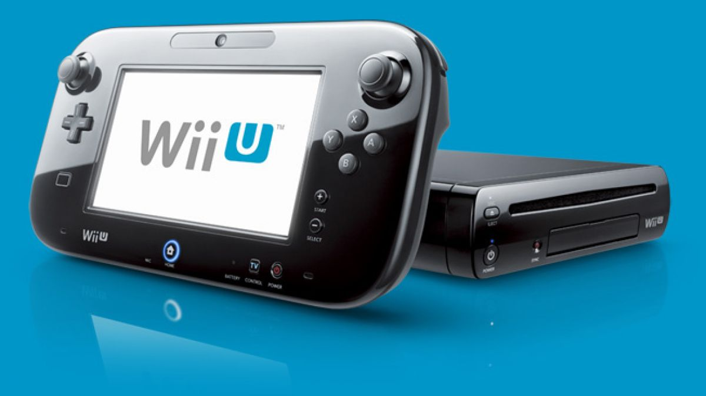

Wii U
Wii U (tidigare känt under projektnamnet Project Café) är en spelkonsol som producerades av Nintendo.
Den släpptes den 30 november 2012 i Europa, och ersatte företagets tidigare konsol Wii.
Wii U styrs med en specialutvecklad kontroll,
den så kallade Wii U GamePad, med inbyggd 6,2-tums skärm.
Konsolen kan även använda alla tillbehör som passar till Wii.
Nintendo bekräftade under E3 2012 att Wii U-konsolen stödjer upp
till två Wii U GamePads samtidigt.
Wii U GamePad är rörelsekänslig och sägs vara känsligare och mer precis än tidigare rörelsekänsliga kontroller.
Tekniken är byggd på samma grund som användas i Wii Motion Plus.
Kontrollen har
även två stycken analogspakar, styrkors, ABXY-knappar,
L-R-knappar med två extra triggers, en inbyggd kamera, stereohögtalare och mikrofon.
Reklam
Populära spel
-
Mario Kart 8
-
The Legend of Zelda: The Wind Waker
-
Mario Maker